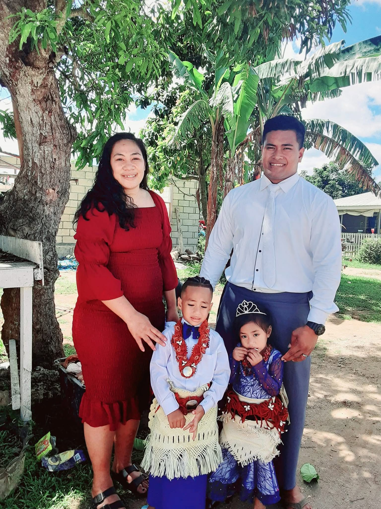
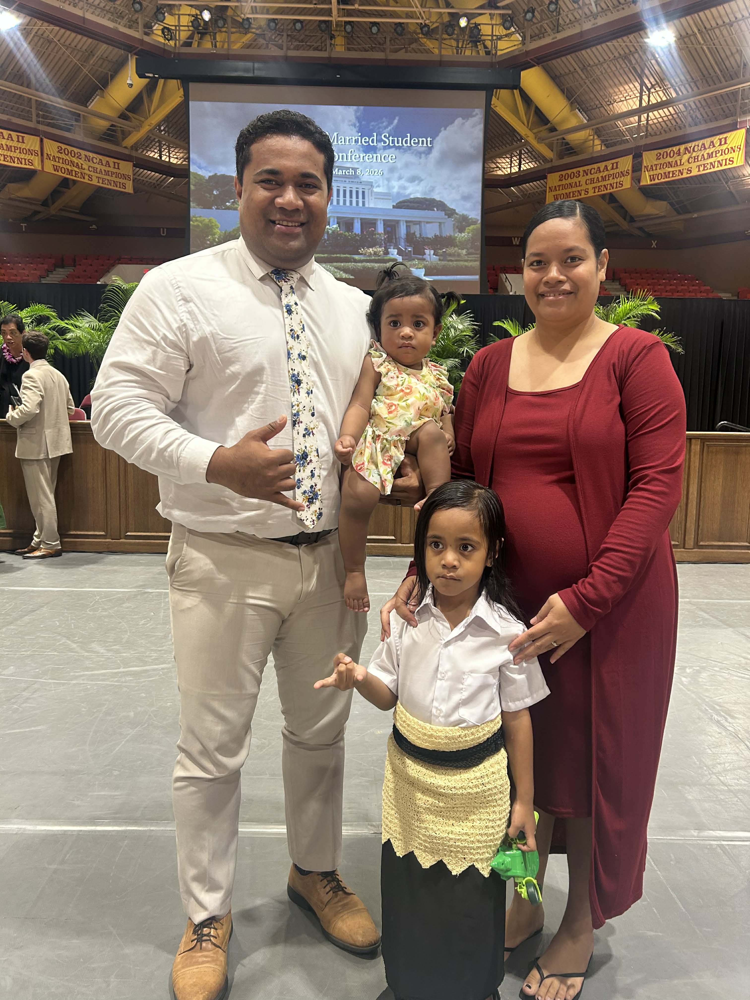

Why My Family Inspires Me





I grew up in a loving and humble family that has always been my source of inspiration. I have four brothers and one sister, and we have always been there for each other even when we don't have much. We were raised by our grandparents, who taught us the importance of family, love, and respect. Our living was from selling vegetables and fruits from our farm, and we learned the value of hard work and perseverance from a young age.
My family inspires me because they have always been there for me, supporting me through every challenge and celebrating my successes, no matter how big or small. Their love and encouragement give me the confidence to pursue my dreams and to never give up, even when things get tough. They teach me the value of perseverance and the importance of staying true to myself.
We didn't have much, but we were happy, cared for, grateful for what we have, and above all else, we knew we were loved beyond reason. I enjoy money as much as the next person and understand how important it can be, but I'm incredibly grateful that my family essentially had none of it when I was growing up.
"I give thanks daily to a loving Heavenly Father who has blessed me with this family I love so dearly.”
Even though we may not have much in terms of material possessions, but they will always be my greatest source of inspiration and motivation.